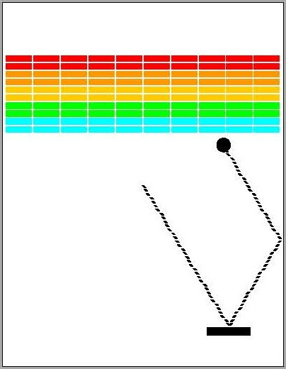
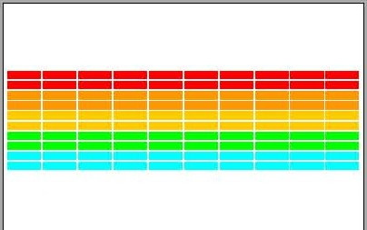

|
T-Th 9:05 |
CS 1110: Introduction to Computing Using Python Fall 2014 |
|||||||||||||||||
|
Main
About: Announcements Staff Consultants Times & Places Calendar Materials: Texts Python Command Shell Terminology VideoNote Handouts: Lectures Assignments Labs Assessment: Grading Exams Resources: CMS Piazza AEWs FAQ Python API Python Tutor Style Guide Academic Integrity |
Assignment 7:
|
|
This assignment, including some of the wording of this document, is adapted from an assignment by Professor Eric Roberts at Stanford University. Your task is to write the classic arcade game Breakout. If you have never played Breakout before, there are lots of versions online, particularly as flash games. The old school versions give you an example of the basic gameplay, though they are considered boring by modern standards. Most of the modern versions of Breakout were inspired by the Arkanoid series and have power-ups, lasers, and all sorts of weird features. The flash game Star Ball is an example of a fairly elaborate Breakout variant. One of the main challenges with this assignment is its scope is completely up to you. There is a bare minimum of functionality that you must implement; you must have all the features of an old-school Breakout game. But after that point, you are free (and encouraged) to add more interesting features to your game. The video to the right shows our solution, which has several extra features such as sound and a countdown timer. You should not feel compelled to add these features to your game. You are permitted to do anything that you want, provided that the basic functionality is there. |
|
Despite any difficulties you might have had with previous assignments, we know that this assignment is easily within your grasp. You just have to start early, break the problem up into manageable pieces, and program/test incrementally. Below, we discuss stages of implementation and give suggestions for staying on top of the project. If you follow our advice and test each piece thoroughly before proceeding to the next, you should be successful.
Our bare minimum solution is about 700 lines of code. This is ~230 lines in breakout.py (including the ~140 lines already there), ~200 lines in gameplay.py (including the ~70 lines already there), and ~220 lines in models.py (including the ~100 lines already there). So you should expect to be write around 500 lines of code for the bare minimum solution. While this may seem intimidating, a good amount of that is headers and specification. Our minimum solution has 20 methods across all four classes, not including getters and setters.
This final assignment has several important objectives.
Authors: W. White, D. Gries, E. Roberts
This is a classic assignment that we are giving again because students really like it. You might even find some old solutions out there if you look really hard. There are some major modifications made in the assignment this year, however. We are always making changes to the architecture to make the assignment a little more interesting.
Even though this assignment is different, please do not look up the old solution. That is still a violation of academic integrity, and copying code (without attribution) from that solution is an instance of plagiarism. The program Moss checks for similarity in parts of the code, not just all of it. If you copy code from the old solution (even though it is different) we will know. The code is too complex for accidental similarities to happen.
There is a lot of code available for you to use in in the Lecture on OO Design. The animation, subcontroller, and etch-a-sketch examples are particularly useful. You are permitted to copy whatever code you want from these (or other samples).
However, if you copy code you must cite the source. This is no different than quoting a book or article in an essay or research paper. In the function specification, you should add a paragraph citing the source module and the original authors (likely the CS 1110 instructors). You must cite your source even if you make changes; that is no different than paraphrasing a quote in an essay or research paper.
Unless you make drastic changes, Moss will catch any copying of the demo code from lecture. Do it right; cite the source.
There is another Academic Integrity issue with this assignment: copyrighted material. You do not own the rights to Pokémon. Pokémon is owned by Nintendo. The president of Nintendo America is a Cornell alum. Please do not encourage our alums to sue us by using Pokémon artwork in your game.
In general, you are only allowed to use copyrighted material if you have a license to do so. For example, many of the songs and sound effects in the NewGrounds library are available for you to use under an Attribution License. That means you are free to use it so long as you cite the source in your documentation (e.g. your header comments). This is okay. A license where you have to pay is not okay.
If you are in doubt as to whether you have a license to use something, ask us on Piazza.
You may do this assignment with one other person. If you are going to work together, then form your group on CMS as soon as possible. If you do this assignment with another person, you must work together. It is against the rules for one person to do some programming on this assignment without the other person sitting nearby and helping.
We are allowing some limited additional collaboration. If you want to talk to other people in the class about how you broke up your code -- what goes in gameplay.py and what goes in models.py -- you may do that as well. If you want ideas for method specifications, that is okay. The number 1 rule is this: with the exception of your CMS-registered partner, please do not look at anyone else's code or show your code to anyone else, in any form what-so-ever.
This is very long assignment, much like Assignment 4. However, both I and the consultants have a lot more experience with this assignment, and so it should go much smoother. Once gain, the trick is to pace yourself. While there are no unit tests this time, you should be able to figure out if everything is working simply by playing the game.
The first thing to do in this assignment is to download the zip file A7.zip from this link. You should unzip it and put the contents in a new directory. This time, you are going to get a directory with a lot more than usual. In particular, this zip file contains the following:
breakout.pyBreakout.
This is the controller that launches the application. It is one of three
modules that you will modify for this assignment. While it is the primary
controller class, you will note that it has no script code. For that,
you will use the module __main__.py below.
gameplay.pyGameplay.
This class manages a single game of breakout. It works as a subcontroller,
just like the example subcontroller
from class. It is another of the three modules that you will modify for this assignment,
and the one that will require the most original code.
models.pyBall and
BrickWall. If you want to add other model classes (such
as for your Paddle), then you add those here as well. This is the last of
the three files you should modify for this assignment.
constants.pybreakout.py,
gameplay.py, and models.py to ensure that these
modules agree on certain important values. It also contains code for
adjusting your brick size. You should
only modify this file if you are adding additional constants as part
of your extended features.
game2d.pyGView)
for this application. It also contains the parent classes for your
models and controller. Under no circumstances should you ever
modify this file!
__main__.pySoundsFontsImagesGImage allows you to
animate images in this game, should you wish. You can also use it
to provide a background; just remember to draw the background image
first.
For the basic game, you will only modify the first
three files listed above. The class Breakout is a subclass
of the class GameApp. With the
exception of BrickWall, your model classes should all be subclasses
of GObject. As part of
this assignment, you are expected to read the
online documentation which describes how
to use the basic classes.
Because there are so many files involved, this application is handled a little
differently from previous assignments. To run the application, put all of the
files in a folder, and give the folder a
name like breakout. The file __main__.py turns the
entire folder, not just one module, into a script. You already saw this in
the WordApp application in Assignment 4.
As with that game, change the directory in your command shell to just
outside of the folder breakout
and type
python breakout
In this case, Python will "run the folder" by executing the application
code in __main__.py. This trick only works when you run the
folder breakout as a script; you cannot import the folder.
If you wanted to "import a folder" (which, for this assignment, you don't),
you would create a file called __init__.py.
This assignment closely follows the model-view-controller pattern discussed in class. The modules are clearly organized so that each holds models, the view, or a controller. The organization of these files is shown below. The arrows in this diagram mean "imports". So the Breakout controller imports the view and Gameplay subcontroller. The Gameplay controller imports the view and the models. This leads to an important separation of files. Breakout is never permitted to access anything in models.py and Gameplay is never permitted to access anything in breakout.py. This cuts down on those annoying meetings.
You will notice that the models module imports the view because it needs the
parent class GObject to perform any
drawing. In practice, we often like to separate the model and view to cut down
on the number of arrows (less meetings). However, that would make this
assignment a lot harder. Fortunately, the view does not import anything
(and should not be modified). This means there are no cycles in this
architecture (e.g. A imports B imports C imports A). Cyclical imports
are very dangerous and you have to be careful with them in large applications.
Avoiding cycles is one of the reasons we draw pictures like the one above.
In addition to the four main modules, there is another module with no class or function definitions. It only has constants, which are global variables that do not change. This is imported by the model module and the two controllers; it is a way to help them share information.
As you can see from the online documentation,
the class Breakout needs to implement three main methods.
They are as follows:
| Method | Description |
|---|---|
init() |
Initializes the game state and attributes. Because of how Kivy works, initialization code should go here and not in the constructor (which is called before the window is sized properly). |
update(dt) |
Update the models for the next animation frame. The speed at which this
is called is determined by the (immutable) attribute fps,
which is set by the constructor. The parameter dt is time
since the last call to update.
|
draw() |
Called when update is complete, and the application is ready
to redraw the models. Implementing this method should be as simple as
calling the method draw
inherited from GObject.
|
Obviously, you are not going to put all of your code in those three methods;
the result would be an unreadable mess. An important part of this assignment
is developing new methods whenever you need them, so that each method is small
and manageable. Your grade will depend partly on the design of your program.
As one guideline, points will be deducted for methods that are more than 40 lines
long. This includes the specification (though init, update,
and draw are exempt from this rule)..
You will also need to add methods and attributes to the classes Gameplay,
BrickWall, and Ball in model.py. These
classes are completely empty, though we have given you a lot of hints in
the class specification. You should read all these specifications.
As you write the assignment, you may find that you need additional attributes. Whenever you add a new attribute to a class, you must fully state the invariant in your specification. All instance attributes should be hidden. While you do not need to enforce the invariants, you must have getters and setters if the attributes are accessed by a class in another model. For example, if the Gameplay class needs to check the velocity of the ball, then you are going to need getters for the velocity in the Ball class.
When approaching this assignment, you should always be thinking about "what code goes where?" If you do not know what file to put things in, please ask on Piazza (but do not post code). In general, you should follow these guidelines:
This controller does very little. All it does is keep track of the game state (e.g. whether or not the game is paused). Most of the time it just calls the methods of Gameplay, and Gameplay does all the work. However, if you need anything between games, like a paused message or a countdown clock, this goes here.
This class does all the hard work. In addition to the initializer, it needs the following three methods as a bare minimum:
The last one is going to be quite complex. If you try to write it as a single method, you are going to violate the 40 line rule. So you will need to add some helpers there as well.
In general, anything that involves additional gameplay is going to go in this class.
The models just keep track of data. Most of the time, models just have attributes, with getters and setters. Think Dataset and Cluster from the previous assignment. However, sometimes models have additional methods that perform complex computation on the data, like distance and updateCentroid in class Cluster
The models in this assignment are the game objects on screen: the ball,
the paddle, and the bricks. Of these three, it is more important to
have a class for Ball. Ball needs additional attributes
for its velocity, and you need several extra methods to perform complex
calculations on this velocity. However, you do not need an extra class
for the paddle, since all you are doing is changing its x and y position.
The provided class GRectangle
should be enough for paddle.
You also do not need a class for a brick. GRectangle is fine
there as well. However, we do want a class that stores all of the bricks,
called BrickWall. Again, think of Dataset. We did not
make you create a class for the points, but we wanted a class to store
the points in them. Why do we need BrickWall? Why cannot we use
a simple list? That question is answered below
when we talk about collision detection.
If your added features include power-ups, like those in Arkanoid,
then you are going to need additional model classes. In that example, you are going
to need a class for the paddle to keep track of what power ups it has. As a general
rule, if your game object needs additional attributes that are not included
in GObject, then you are going to have
to create a new class.
You should start as soon as possible. If you wait until the day before this assignment is due, you will have a hard time completing it. If you do one part of it every 2-3 days, you will enjoy it and get it done on time. We have also tried not to include your Thanksgiving Break in this assignment.
The hard part of this assignment may be "finishing up": designing the final reorganization in order to incorporate three balls in a game. We have budgeted you one day for this, but you have up to four days if you decide just to do the bare minimum and not add any extensions.
Implement the program in stages, as described in this handout. Do not try to get everything working all at once. Make sure that each stage is working before moving on to the next stage.
Set up a schedule. We have suggested some milestones, but make up your own schedule. Leave time for learning things and asking questions. Above all, do not try to extend the program until you get the basic functionality working. If you add extensions too early, debugging may get very difficult.
We have tried to give you as much guidance in this document as we can. However, if you are still lost, please see someone immediately. Like the last few assignments, this is a fairly involved project, and you should get started early. To get help, you may talk to the course instructor, a TA, or a consultant. See the staff page for more information.
In addition, you should always check Piazza for student questions as the assignment progresses. We may also periodically post announcements regarding this assignment on Piazza and the course website.
The initial configuration of the game Breakout is shown in the left-most picture below. The colored rectangles in the top part of the screen are bricks, and the slightly larger rectangle at the bottom is the paddle. The paddle is in a fixed position in the vertical dimension; it moves back and forth horizontally across the screen along with the mouse (or finger, on a touch-screen device) ó unless the mouse goes past the edge of the window.
|
Starting Position |
 Hitting a Brick |
A complete game consists of three turns. On each turn, a ball is launched from the center of the window toward the bottom of the screen at a random angle. The ball bounces off the paddle and the walls of the world, in accordance with the physical principle generally expressed as "the angle of incidence equals the angle of reflection" (it is easy to implement). The start of a possible trajectory, bouncing off the paddle and then off the right wall, is shown to the right. The dotted line is there only to show the ball's path and will not actually appear on the screen.
In the second diagram above, the ball is about to collide with a brick on the bottom row. When that happens, the ball bounces just as it does on any other collision, but the brick disappears. The left-most diagram below shows the game after that collision and after the player has moved the paddle to put it in line with the oncoming ball.
|
Intercepting the Ball |
Breaking Out |
The play on a turn continues in this way until one of two conditions occurs:
In the first case, the turn ends. If the player has a turn left, the next ball is served; otherwise, the game ends in a loss. In the second case, the player wins and the game ends.
Clearing all the bricks in a particular column opens a path to the top wall. When this delightful situation occurs, the ball may bounce back and forth several times between the top wall and the upper line of bricks without the user having to worry about hitting the ball with the paddle. This condition, a reward for "breaking out", gives meaning to the name of the game. The last diagram above shows the situation shortly after the first ball has broken through the wall. The ball goes on to clear several more bricks before it comes back down the open channel.
Breaking out is an exciting part of the game, but you do not have to do anything in your program to make it happen. The game is operating by the same rules it always applies: bouncing off walls, clearing bricks, and obeying the "laws of physics".
One of the challenges with making an application like this is keeping track of the game state. In the description above, we can identity four distinct phases of Breakout.
Keeping these phases straight is an important part of implementing the game.
You need this information to implement update in Breakout
correctly. For example, whenever the game is ongoing, the method update
should instruct Gameplay to move the paddle. However, if the game has not
started yet, the method update should create a new Gameplay
object.
For your convenience, we have provided you with constants for four states.
STATE_INACTIVE, before a new game has started
STATE_ACTIVE, when the game is ongoing and ball is in play
STATE_COUNTDOWN, when the player is waiting for a new ball
STATE_PAUSED, when the game is paused to display a message
STATE_COMPLETE, when the game is over
All of these constants are available in constants.py. The current application
state should be stored in the attribute _state inside Breakout.
You are free to add more states when you work on your game extensions.
However, your basic game should stick to these four states.
We have divided these instructions into two parts. The first part covers the basic things that you must implement just to get the game running. Once you do that, the assignment gets more interesting. You should try to finish everything in this part of the assignment by Monday, December 8 (after the last week of class). If you do that, you will be in good shape to add extensions (though you will not lose any points if you do not have extensions; they are a form of extra credit).
The very first thing that you should do is read the file constants.py.
If you ever need a value like the size of the paddle, the size of the game window,
or so on, this is where you go. When writing code, you should always use the
constants, not raw numbers (or "magic numbers," as we call them). Magic numbers
make your code hard to debug. And if you make a change (e.g. to make the ball bigger),
you have no idea about all of the locations in your code that need to be changed.
With that said, you are welcome to change any of these numbers if you wish. You are also encouraged to add more constants if you think of other numeric values that you need. Anytime that you find yourself putting a number in your code, ask yourself whether or not it would make sense as a constant.
We start with a simple warm-up to get you used to defining state and drawing graphics elements. When the player starts the application, they should be greeted by a welcome screen. When you work on your extensions, you can embellish your welcome screen to be as fancy as you wish. But for now, keep it simple. Your initial welcome screen is going to consist of a text message.
Because the welcome message is before any game has started, it belongs in the Breakout class, not the Gameplay class. You are already seeing how we separate what goes where.
The text message will look something like the one shown to the above. It does not need to say "Press to Play". It could say something else, as long as it is clear that the user needs to click the mouse (or press the screen) to continue. You also do not have to use the dreaded Comic Sans font like we have.
To create a text message, you need to create a
GLabel and store in it an attribute. If
you read the specification for class Breakout, you will not see any
attributes for the text message. That means it is your responsibility to add one.
You should add the description of your attribute to the class specification.
For now, we will assume that you named the attribute _message, but
you could name it anything you like.
Since the welcome message should appear as soon as you start the game, it should
be created in the method init, the first important method
of the class Breakout. When creating your message, you will want
to set things like the font size and position of the text. As you can see from
the documentation for GLabel and
GObject, graphics objects have a
lot of attributes to specify things such as position, size, color, font style,
and so on. You should experiment with these attributes to get the welcome screen
that you want. The key thing to remember is that, in Kivy, that screen coordinates
start from the bottom-left corner of the window (and not the top right as with
most graphics applications).
Simply adding this code to init is not enough. If you were to
run the application right now, all you would see is a blank white window.
You have to tell Python what to draw. To do this, simply add the line
self._message.draw(self.view)
to the method draw in Breakout. The (non-hidden)
attribute view is a reference to the window; this instructs Python
to draw this text label in the window. Now run the application and check if
you see your welcome message.
The other thing that you have to do in the beginning is initialize the game state.
The attribute _state (included in the class specification) should start
out as STATE_INACTIVE. That way we know that the game is not ongoing,
and that the program should (not yet) be attempting to animate anything on the screen.
In addition, the other attributes listed (particularly _game) should
be None; we have not done anything yet!
The _state attribute is an important part of many of the invariants in
this game. In particular, we want your new attribute for the welcome message to
have the following invariant:
STATE_INACTIVE, then there is a welcome message
STATE_INACTIVE, the welcome message is None.
Does your definition of init satisfy this invariant?
The welcome screen should not show up forever. The player should be able to
dismiss the welcome screen (and start a new game) when he or she clicks the
mouse or touches the screen. You track this with the attribute touch
which is part of GView. This
attribute is a GPoint if the mouse
button is currently down, and None if it is not.
When looking at the value touch, remember the issues that we discussed in class. The method update is called every 16 millisecond. If you hold the mouse down, then you see a lot of touches. You just want the first touch! That means you need an attribute _last (included for you in the specification) that keeps track of what touch was in the last call to update. You know that a press is brand new if _last is None, but touch is not None.
If you detect a mouse press, then you should change the state STATE_INACTIVE
to STATE_COUNTDOWN. The game has now started (but there is no ball, or
even bricks yet). You are not ready to actually write the code for the game, but
switching states is an important first activity.
Invariants must be statisfied at the end of every method, so you need to assign None
to the welcome message as well. This will require a simple change to method
draw to keep it from crashing. Once you have done that, run the
application. Does the message disappear when you click the mouse?
This first part of the assignment looks relatively straightforward, but it
gets you used to having to deal with controller state. In this part, you
already immediately had to add attributes beyond the ones that we have provided.
Whenever you a new attribute, you must add it and its corresponding invariant
to the class specification. Add it just after the comment starting
"ADD MORE ATTRIBUTES", to make it easier for the graders (and you)
to find them. We will deduct style points for instance attributes that are not
specified.
Try to finish this part by Sunday, November 23 (e.g. two days after starting the assignment). You will spend most of your time reading the online documentation. But this will give you a solid understanding of how this application works.

Technically, you are violating an invariant after the last step. When you changed
the state to STATE_COUNTDOWN, the attribute _game was
no longer supposed to be None. Construct a Gameplay object and assign
it to this attribute.
Right now, the subcontroller Gameplay does not anything data in it.
Eventually it is going to create the bricks, a ball, and a paddle. Right now, we
are just going to focus on the bricks.
This is going to require that you modify two different classes in two different files. As a result, this activity will help you see how everything fits together. Read the specification for both Gameplay and BrickWall. You are going to need to add an __init__ method and a draw method to both of these classes. These are the only four methods that you need for this part of the assignment.
The __init__ for Gameplay is easy. Just construct a BrickWall object and assign it to the specified attribute _wall. The draw method is also easy: just call the (not yet implemented) draw method in BrickWall.
This means that all of the hard work is going on in class BrickWall. So go
read the specification for that class again. You will see that it contains a
(one dimensional) list of bricks. The initializer for this class should create
this list and add the bricks (which are all just GRectangle
objects). The draw method should draw these bricks.
As we mentioned before, the bricks should be instances of
GRectangle. To define a rectangle, use
the attributes x, y, width, height,
linecolor, and fillcolor to specify how it looks on screen.
Look at the sample code from lecture to see how
to do this. You can either assign the attributes after the object is created, or assign
them in the constructor using keywords. See the online documentation for more. When
you color a brick, you should set the line color so that its outline is the same color
as the interior (instead of black).
To get you started, you might want to create a single Brick object of some
position and size and add it to list, just to see what happens (though you will need to
finish draw first). Then think about how you can place the BRICK_ROWS
rows of bricks. You will probably need a loop of some kind. We do not care if it is a
for-loop or a while-loop; just get the job done.
When you are ready, you should set up the bricks as shown to the right. The number,
dimensions, and spacing of the bricks, as well as the distance from the top of the window
to the first line of bricks, are specified using global constants given in module
constants. The only value you need to compute is the x coordinate
of the first column, which should be chosen so that the bricks are centered in
the window, with the leftover space divided equally on the left and right sides
(Hint: the leftmost brick should be placed at x-coordinate
BRICK_SEP_H/2). The colors of the bricks remain constant for two rows
and run in the following sequence: RED, ORANGE, YELLOW,
GREEN, CYAN. If there are more than 10 rows, you are to start
over with RED, and do the sequence again. We suggest that you add a constant
BRICK_COLORS to constants.py that lists these colors
in an appropriate way to help with this.
Once again, adding bricks to the model is not going to draw them on the screen.
Drawing is going to involve quite a chain of events here. First, you have to
to modify the method draw in Breakout, as this is where
all the drawing really happens. You should note that the attribute of
Breakout is _game, not _wall; _wall
is an attribute of Gameplay If you are going to draw the bricks in
Breakout, you have to go through Gameplay. Furthermore,
writing
self._game._wall.draw(self.view)is not allowed. We will take off style points if a class in one module ever accesses the hidden attribute of an object of a class in different module.
This is the purpose of the draw method in Gameplay and BrickWall. The draw in Breakout calls the draw method in Gameplay, which calls the draw method in BrickWall. The latter does all the work. It should have a for-loop that draws all the bricks, using the
drawmethod inGObjectEach of these draw methods should take the
viewas a parameter, just like thedrawmethod inGObject. We do not have to do this in Breakout because view is already there as an attribute. However, neither gameplay.py nor models.py imports breakout.py, so we cannot access this attribute. Therefore, it has to be made a parameter instead.Testing Your Code
When you are testing the later parts of this assignment, you should play with just 3-4 bricks per row and 1-2 rows of bricks. This will save time and let you quickly see whether the program works correctly when the ball breaks out (gets to the top of the window). It will also allow you to test when someone wins or loses. If you play with the default number of bricks (10 rows and 10 bricks per row), then each game will take a long time to test.
You might assume that testing in this manner requires you to change the values of the global constants that give the number of rows and number of bricks in a row. This is also undesirable, a you might forget to change them back. Instead, we have added some clever code in
constants.pythat allows you to change these constants when you start the application.When you run your application (again, assuming that it is in a folder called
breakout) try the commandWhen you do this, Python changes the value ofpython breakout 3 2BRICKS_IN_ROWto 3 and the value ofBRICK_ROWSto 2.You should make sure that your creation of the rows of bricks works with any number of rows and any number of bricks in each row (e.g. 1, 2, ..., 10, and perhaps more). This is one of the things we will be testing when we run your program.
Try to finish this part by Monday, November 24. All you need to do is to produce the brick diagram shown above (after the welcome screen). Once you have done this, you should be an expert with graphics objects. This will give you considerable confidence that you can get the rest done.
Create (and Animate) the Paddle
Next you need to create the black paddle. Again, this is to be stored in an attribute of class
_game. That means that you must create it in the initializer forGameplayand modify your drawing code so that it appears. As with the bricks, the paddle should be an object of typeGRectangle.Animating the Paddle
The real challenge with this part is making the paddle move. This is the part where people really start to have trouble with this assignment. We highly recommend that you look at the etch-a-sketch sample from class to help you with this part of the assignment. The same code that computes a new line to draw is how you are going to determine how to move the paddle.
Moving the paddle is part of the game, so that means it belongs in the
Gameplayclass. We recommend a method with a name like updatePaddle. Remember that this method must be called within the update method of Breakout, or nothing will happen. The method updatePaddle will need access to the touch attribute of the view (which is itself an attribute in Breakout). As class Gameplay is not allowed to access any of the attributes of Breakout, that means you need to pass touch as an argument in this method call.The paddle should only start moving once the user presses the mouse; if the mouse is not pressed then
touchwill be None. Personally, we like to require that the mouse press be inside of the paddle (so the paddle will not move if you press outside of the paddle). You can test this with thecontainsmethod inherited fromGObject. With that said, some students find this makes the game frustrating, so this part is optional.Regardless of whether or not you do this, it is important that the paddle should not teleport. If you can click anywhere on the screen and the paddle moves there instantly, you are not doing it right (and the gameplay is a bit unbalanced).
The way to prevent teleportation is to move the paddle so that the distance between the paddle and place the player first pressed the mouse remains fixed at all times. This requires that you know the location of both the current touch location and the previous touch location. The attribute
touchonly stores the current touch, so you will once again need a new attribute (which we did not provide). Add its specification toGameplayand remember to initialize it in the__init__method in a way that satisfies the invariant.Once you have both the previous touch position and the current touch position, all you need to do is move the paddle by the same amount that the mouse moved. Once again, you might want to refer to the etch-a-sketch demo shown in class for ideas on how to do this. Remember that if you copy any code, you need to cite its source in the function specification or comments.
Important Considerations
You should ensure that the paddle stays completely on the board even if the touch moves off the board. If you do not do this, the paddle is going to be completely lost when you release the mouse. Our code for this extra feature is 3 lines long; it uses the functions
minandmax.Your implementation should only allow the paddle to be moved when the game is ongoing. That is, the state should either be
STATE_COUNTDOWNorSTATE_ACTIVE.This means that update in Breakout is starting to get more complicatd. At this point you might want to start thinking about helper methods to organize your code better. Look at the state demo from lecture for ideas on how to organize your code.Draw the paddle and get it to follow your mouse by November 25, before heading off for Thanksgiving. Moving the paddle is easy if you ignore the teleporting problem for now. Just have it move to where the touch value is pointing. We will have consultants on that Tuesday, before you leave. Though there is no lab, the lab sections will open as general office hours to help you.
Stop the paddle from teleporting by Monday, December 1, when you get back from break. You do not have to work on this over Thanksgiving if you do not want to. Once you get the paddle to move properly, you have overcome the first major hurdle in the project, and will be in good shape for the rest of the assignment.
Create a Ball and Make it Bounce
You are now past the "setup" phase and into the "play" phase of the game. In this phase, a ball is created and moves and bounces appropriately. For the most part, a ball is just an instance of
GEllipse. However, since the ball moves it does not just have a position. It also has a velocity (vx,vy). Since velocity is a property of the ball, these must be attributes of the ball object. There are no such attributes inGEllipse, so we have to subclassGEllipseto add them. This is what we have done for you in the classBallwhich is included in the module models.pyNote that the class just includes specifications for the velocity attributes. You must create these in the class initializer. In addition, you will might want to create getters for these attributes. Remember that Gameplay is in a different module file, so it is not allowed to access any of the attributes in Ball directly, without using getters and setters.
In our code, we have getters for the velocity, but we do not need any setters. That is because the only time you change the velocity of the ball is when it bounces off something. Therefore, we have methods to bounce the ball in our code instead of setters. You are welcome to do this, or you are welcome to use setters. It is up to you.
Initialize the Ball
Once again, you should write a proper initializer, overriding the
__init__method. Remember to call the initializer of the parent class very first thing. When you initialize the ball, it should be in the center of the window. Keep in mind that attributesxandyare the bottom-left corner, and not the center of the ball. You might find the attributescenter_xandcenter_yuseful.When you initialize the attribute
_vy, the ball should head downward. That means velocity should be negative. We suggest you start with a value of -5.0_vy; you can adjust this later as you see fit. The game would be boring if every ball took the same course, so you should choose component_vxrandomly. Do this with the module random, which has functions for generating random numbers (you have already had some experience with this module in the previous assignment).To get you start, we suggest that you initialize
_vxfollows:The first line setsself._vx = random.uniform(1.0,5.0)
self._vx = self._vx * random.choice([-1, 1])_vxto be a random float in the range 1.0 to 5.0 (inclusive). The second line multiplies it by -1 half the time (e.g. making it negative).Serve the Ball
Even though the ball is part of the game, when the ball is served is determined by the class Breakout. That is because, when there is no ball, the game is paused, and pausing is controlled by Breakout. If you are unsure of what we mean here, go back and look at the subcontroller sample from class.
Serving the ball is simple as assigning a new Ball object to the attribute
_ballin Gameplay. You also need to remember to draw the ball. You draw the ball in the draw method of Gameplay because the ball is attribute of GameplayThe difficult part is figuring out when to serve the ball. An obvious time to serve the ball is in the
__init__method forGameplay, immediately after you create the bricks and the paddle. But if you do this, then the ball will move before the player can orient him- or herself to the game (and hence the player will probably miss the ball). Ideally, we would like to delay the ball by 3 seconds, giving the player time to get ready.That is why the state when you first start the game (setting up the bricks and paddle) is called
STATE_COUNTDOWN. Your Breakout controller is supposed to delay for 3 seconds. After those 3 seconds are up, it should call a method inGameplayto create the ball. It should also change the _state attribute in Breakout toSTATE_ACTIVE.How do you delay something happening for 3 seconds? You are going to need yet another attribute (which you should specify) for keeping track of the time. For ideas on how to do this, look at how we time double clicks in the etch-a-sketch demo. Once again, you should cite the source if you copy any code.
Breakoutis designed to run at 60 frames a second. So once the timer passes 60, you can safely assume that 1 second has passed. If you really want to be exact with your calculation, you can make use of thedtparameter inupdate. This parameter stores a float that is the time (in seconds) since the start of the last animation frame.Move the Ball
To move the ball, you are going to need to add another method to
Gameplay. You can name this method whatever you want, but we have called oursmoveBall. This method should not be hidden, since the Breakout controller will call it as part ofupdatewhenever the state isSTATE_ACTIVE. The purpose of this method is to move the ball and handle any physics. It is perhaps the most complicated method in the entire assignment.Each time this meothd is called, it should move the ball one step and change the ball direction if it hits a wall. Do not worry about collisions with the bricks or paddle just yet. For now, the ball will travel through them like a ghost. You will deal with collisions in the next task.
To move the ball one step, simply add the ball's velocity attributes to the ball's corresponding position coordinates. Since you are changing the attributes in the ball object, we suggest that you make this a method in the Ball class.
Once you have moved the ball one step, you should check for a collision with a wall. If the ball is going up, check if any part of the ball has a y-coordinate greater than or equal to
GAME_HEIGHT. In that case the ball has reached the top and its direction has to be changed so that it goes down. You do this by setting_vyattribute to -_vy. As Gameplay cannot access the attribute_vyin Ball directly, this requires another method.Check the other three sides of the game board in the same fashion. When you have finished this, the ball will bounce around the playing board forever ó until you stop it.
Keep in mind that it is not enough to simply look at the
xoryposition of the ball. You want to know when any part of the ball has reached (or gone over) one of the sides. For example, to see whether the ball has gone over the right edge, you need to test whether the right side of the ball is over that edge. However, the attributexis the left side of the ball. See the attributes inGObjectfor clues on how to take care of this problem.Try to finish this part by Wednesday, December 3. This is the bare minimum that we want from S/U students to pass the assignment.
Check for Collisions
Now comes the interesting part. In order to make Breakout into a real game, you have to be able to tell when the ball collides with another object in the window. As scientists often do, we make a simplifying assumption and then relax the assumption later. Suppose the ball were a single point (x,y) rather than a circle. Then, for any
GObjectgobj, the method callreturnsgobj.contains(x,y)Trueif the point is inside of the object andFalseif it is not.However, the ball is not a single point. It occupies physical area, so it may collide with something on the screen even though its center does not. The easiest thing to do ó which is typical of the simplifying assumptions made in real computer games ó is to check a few carefully chosen points on the outside of the ball and see whether any of those points has collided with anything. As soon as you find something at one of those points (other than the ball, of course) you can declare that the ball has collided with that object.
One of the easiest ways to come up with these "carefully chosen points" is to treat everything in the game as rectangles. An
GEllipseis defined in terms of its bounding rectangle (i.e., the rectangle in which it is inscribed). Therefore the lower left corner of the ball is at the point (x,y) and the other corners are at the locations shown in the diagram to the right (d is the diameter of the ball). These points are outside of the ball, but they are close enough to make it appear that a collision has occurred.You should write a hidden helper method for
Gameplaycalled_getCollidingObjectwith the following specification:def _getCollidingObject(self): """Returns: GObject that has collided with the ball This method checks the four corners of the ball, one at a time. If one of these points collides with either the paddle or a brick, it stops the checking immediately and returns the object involved in the collision. It returns None if no collision occurred."""You now need to modify the
moveBallmethod ofGameplay, discussed above. After moving the ball, call_getCollidingObjectto check for a collision.
- If the ball collides with the paddle going up , do not do anything (this prevents paddle "stickiness")
- If the ball collides with the paddle going down, negate the vertical direction of the ball.
- If the ball collides with a brick in either vertical direction, remove the brick and negate the vertical direction.
There is one more tricky step. To determine whether or not the ball collided with a brick, you have to loop over all the bricks. However, the bricks are stored in the BrickWall object. Remember, Gameplay is not allowed to directly access any hidden attributes in BrickWall. So you will need to add another method to BrickWall. You can add a getter so that you can do the computation in Gameplay. Or you can write a method that does the computation in BrickWall. The choice is up to you.
Once you have completed this, you should be able to start playing a game.
Try to finish this part by Saturday, December 6.. This is the hardest part of the assignment. Other Ivy league universities (which we will not name) give a similar Breakout assignment, but they think this part is too hard for their students and so they give them this part of the code. You are better than that; you can do this.
Finish the Game
You now have a (mostly) working game. However, there are two minor details left for you to take care before you can say that the game is truly finished.
Player Lives
You need to take care of the case where the ball hits the bottom wall. Right now, the ball just bounces off this wall like all the others, which makes the game really easy. In reality, hitting the bottom means that the ball is gone. In a single game, the player should get three balls before losing. This requires a new attribute, perhaps in
Breakout,Gameplay, or evenBrickWall. We will let you decide where it best fits.If the player can have another ball, the
updatemethod should change the state toSTATE_PAUSEDand display a message (as you did on the welcome screen) that the player should click the screen to get a new ball. As soon as the player clicks the screen, switch the state toSTATE_COUNTDOWNand prepare to serve a new ball.Winning or Losing
Eventually the game will end. Each time the ball drops off the bottom of the screen, you need to check if there are any tries left. If not, the game is over. Additionally, as part of the
updatemethod, you need to check whether there are no more bricks. As you have been storing the active bricks in attribute_brick, an easy way to do this is to check the length of this list. When the list is empty, the game ends and the player has won. Once again,Breakoutcannot access this attribute directly; you need a getter.When the game ends, and the player has either won or lost, you should put up one last message. Use a
GLabelto put up a congratulating (or admonishing) message. Finally, you should change the state one last time to indicate that the game is over. This is the purpose of the stateSTATE_COMPLETE.Try to finish this part by Sunday, December 7.
Extending the Game
If you have followed our suggested timeline, you now have three days to extend the game and try to make it more fun. In doing this, you might find yourself reorganizing a lot of the code above. You may add new methods, or change any of the methods you have written. You may add new classes. For example, you may decide to make
Bricka subclass ofGRectangle(as you did withBallandGEllipse). That way the various bricks can hold extra information (e.g. power-ups). You can even change any of the constants or add new ones.All of this is acceptable. Now that you have proved that you can get the code working, you are free to change it as you see fit. However, we highly suggest that you save a copy of the basic game in a separate folder before you start to make major changes. That way you have something to revert to if things go seriously awry when implementing your extensions. Also, we suggest that you make sure to comment your code well in order to keep track of where you are in the coding process.
Extensions are not mandatory, but they do affect grading. Add more and we will be much more lenient with our grading than if you implemented the bare minimum (i.e. everything up to this point). Hence they are a form of extra credit, but you cannot go over the maximum score for the assignment. Note that a submission that does not have good specifications for the helper methods or invariants for the new attributes will not be looked at kindly under any circumstances.
Possible Extensions
Here are some possible ways to extend the game, though you should not be constrained by any of them. Make the game you want to make. We will reward originality more than we will reward quantity. While this is a fairly simple game, the design space is wide open with possibilities.
Improve user control over bounces
The game gets rather boring if the only thing the player has to do is hit the ball. Let the player control the ball by hitting it with different parts of the paddle. For example, suppose the ball is coming down toward the right (or left). If it hits the left (or right) 1/4 of the paddle, the ball goes back the way it came (both
_vxand_vyare negated).Implement "Try Again"
Let the player play as many games as they want. The player could click the mouse button to start a new game. You will need to change how you handle your states to implement this.
Implement sound effects
A really easy extension is to add appropriate sounds for game events. We have provided several audio files in A7.zip. You are not restricted by those; you can easily find lots more. However, remember that it is a violation of the Academic Integrity Policy to use unlicensed copyrighted material.
To load an audio file, you simply create a
Soundobject as follows:bounceSound = Sound('bounce.wav')Once it is loaded, you can play it whenever you want (such as when the ball hits something) by calling
bounceSound.play(). The sound might get monotonous after a while, so make the sounds vary, and figure out a way to let the user turn sound off (and on).Read the online specification to see how to use Sound objects. In particular, if you want to play the same sound multiple times simultaneously (such as when you hit two bricks simultaneously), you will need two different Sound objects for the same sound file.
Add a kicker
The arcade version of Breakout lures you in by starting off slowly. But as soon as you think you are getting the hang of things, the ball speeds up, making life more exciting. Implement this in some fashion, perhaps by doubling the horizontal velocity of the ball on the seventh time it hits the paddle.
Keep score
Design some way to score the player's performance. This could be as simple as the number of bricks destroyed. However, you may want to make the bricks in the higher rows more valuable.
You should display the score at all times using a
GLabelobject. Where you display it is up to you (except do not keep the player from seeing the balls, paddle, or bricks). Do not need to make a newGLabelobject each time the score changes. This will slow down the program tremendously. Simply change thetextattribute in yourGLabelobject.Use your imagination
What else have you always wanted a game like this to do? At some point your game might stop being like Breakout and be more like Arkanoid. Do not go too wild with the power-ups, however. We much prefer a few innovations that greatly improve the play.
You can make any modifications to the gameplay you want, but the core gameplay of bricks, paddle and balls should be there. Please do not submit a copy of Asteroids.
Completing the Assignment
Before submitting anything, test your program to see that it works. Play for a while and make sure that as many parts of it as you can check are working. If you think everything is working, try this: just before the ball is going to pass the paddle level, move the paddle quickly so that the paddle collides with the ball rather than vice-versa. Does everything still work, or does your ball seem to get "glued" to the paddle? If you get this error, try to understand why it occurs and how you might fix it.
When you are done, re-read the specifications of all your methods and functions (including those we stubbed in for you), and be sure that your specifications are clear and that your functions follow their specifications. If you implemented extensions, make sure your documentation makes it very clear what your extensions are.
As part of this assignment, we expect you to follow our style guidelines.
- There are no tabs in the file, only spaces.
- Classes are separated from each other by two blank lines.
- Methods are separated from each other by a single blank line.
- Class contents are ordered as follows: fields, properties, constructor, operators, methods.
- Lines are short enough that horizontal scrolling is not necessary (about 80 chars is long enough).
- The specifications for all of the methods and properties are complete.
- Specifications are immediately after the method header and indented.
- No method is more than 40 lines long, including specification!
There is a new coding convention which we have not yet explicitly stated. Non-hidden methods should be in camelCase. That is, compound words are not separated by underscores, but instead have the first letter of each word (after the first) upper case. This allows us to distinguish methods from functions, as functions are all lower case separated by underscores. You are allowed to break this convention with hidden helper methods, but not in methods that are meant to be accessed by other classes.
Turning it In
You are potentially modifying a lot of files in this assignment. At a bare minimum, your are modifying
breakout.py,gameplay.py, andmodels.py. You might be modifyingconstants.py. You might have extra art and sound files.In addition, you should create a text file called
extensions.txt. In this file, you should write a brief description of your extensions. Tell us what you were trying to do and how you did it. If you used any art or sound assets that required an attribution license, you should put that attribution here.To simplify the submission process, we are not asking you upload each individual file. Instead, put all your files in a zip file called
a7.zipand submit this instead. We need to be able to play your game, and if anything is missing, we cannot play it.
Survey
One last time, we need you to do a survey. The survey should be done individually (even if you worked in a group). As always, the survey will ask about things such as how long you spent on the assignment, your impression of the difficulty, and what could be done to improve it. Please try to complete the survey within a day of turning in this assignment. Remember that participation in surveys comprises 1% of your final grade.
Appendix: Frequently Asked Questions
Over the semesters that we have given out this assignment, there are a few questions that get asked during office hours, Piazza, etc. rather frequently. For your convenience, here is a list of some of them. (More may be added later on.) These are generally aimed toward errors that do not necessarily produce explicit error messages, which make them hard to debug.
Q: I am getting an infinite loop somewhere in
update, etc.; why?A: Questions like these usually arise from a misunderstanding about how
updateanddrawwork. These two functions are automatically called bygame2d.pyon every frame of the game. Do not call them yourself at any time. Anything that you put into one of these functions means that you intend it to happen every frame (barring if-statements, etc.).
Q: Why is the first method for Breakout named
init? Isn't it supposed to be__init__?A: This relates to the question above. The method
initis not, strictly speaking, Breakout's initializer (e.g. it does not create a new instance ofGameApp). That is handled bygame2d.pyagain. This is the reason why you already have aviewattribute once theinitmethod starts, as well as a game window. Aftergame2d.pycreates aGameAppinstance (with its own initializer), it calls Breakout'sinitonce before moving on toupdateanddraw.
Q: My paddle is mysteriously warping back to the middle every time I try to move it! What is happening?
A: Try printing out the
idof the paddle duringupdate. Is it different every time? If so, then that means that you are somehow throwing away the old paddle and creating a brand new one on every frame of the game, which you probably do not want to do. The paddle jumps back to the middle since that is presumably the initial location you set it to.
Q: After the ball hits the right/left wall of the screen, it gets 'glued' there. Why?
A: This is probably caused by a logic error in your wall collison code. As a hint toward how to fix it, make sure the ball only bounces off the right wall when it is moving to the right to begin with.
Q: You said that our program needs to work with any number of rows of bricks. But if we put 50+ rows of bricks then they overflow past the bottom of the screen and the game becomes impossible to beat. Now what?
A: You do not have to worry about this corner case. If your program works with 20+ rows and the colors display properly, then that is fine.
Q: I want to create a background as one of my extensions. How do I do that?
A: Just draw a large
GRectangleobject that covers the screen. Make sure that it is the very first thing you draw, as objects are drawn back-to-front (later objects appear on top of earlier objects).
Q: It is annoying to have to constantly press down the mouse to move the paddle. Is there a way to move the paddle just by moving the mouse without having to press down?
A: Unfortunately, there is not. This is a limitation of Kivy. It is designed for touch screen devices where there is no such concept as moving without pressing down. There is a new feature that suggests we might be able to get around this in Kivy 1.9.0, but that is a beta version of Kivy, and not the same as the one included in CornellExtensions.
Q: I tried right-clicking on the screen and some strange red dots appeared! What are they?
A: As we said in the previous question, Kivy is designed for mobile devices. Right-clicking in any Kivy app is designed to simulate multi-touch on a touchscreen device (notice you can right-click repeatedly to get more red dots, and drag those dots around after creating them). Do not worry about it.